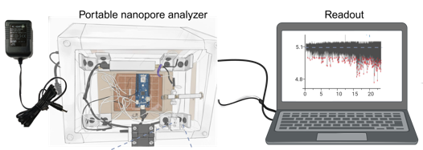

Research
Selected projects across single-molecule sensing, point-of-care diagnostics, and microfluidics.
Funding & Grant Proposals
NSF ECCS Award #2603909 — Awarded
Machine-learning-enhanced solid-state nanopore sensing for multiplexed nucleic-acid detection. $494K, 2026–2029. PI: W. Guan. Contributed project concept, preliminary data, and proposal writing.
SIMPLE-AD — Submitted (Apr 2025)
Salivary isothermal multiplexed microfluidic miRNA profiling for lab-free and early Alzheimer detection. Lead writer of the full proposal. PI: W. Guan.
Research Projects

Real-Time Quantification of RPA Amplicons via Single-Molecule Nanopore Sensing
This ongoing project at the Guan Lab investigates recombinase polymerase amplification (RPA) reaction kinetics through single-molecule nanopore sensing. By reading individual amplicons as they translocate through a solid-state nanopore, the platform performs both qualitative and quantitative measurement of RPA products and enables real-time, amplification-reaction-coupled molecular counting. I lead assay optimization, nanopore measurements, real-time data analysis, and manuscript and proposal development.
Probe-Free Multiplex Detection of RPA Amplicons via Deep Learning
I developed a probe-free multiplex RPA assay for Mpox and RNase P that reaches 100% specificity, coupling single-molecule nanopore readout with deep neural networks. The model classifies translocation signatures from DNA fragments spanning 75 to 500 bp using 3.4 to 12.4 nm pores, achieving 94.2% single-molecule classification accuracy. My role covered nanopore experiments, signal-feature analysis, deep learning model evaluation, and manuscript and figure preparation.


Multiplex Ligation-RPA for Early Prediction of Severe SARS-CoV-2
I developed a multiplex ligation-RPA assay with femtomolar sensitivity and 100% specificity, then engineered it into a portable, sample-to-answer system integrating compact fluorescence detection and rapid miRNA extraction. The assay was validated using 154 clinical saliva samples targeting miR-1273, miR-296, and miR-29 to predict severe COVID-19 in children. I led multiplex assay optimization, buffer and target-concentration tuning, clinical sample analysis, portable workflow validation, and data visualization.
RPA-CRISPR Assisted Nanopore Sensing for Mpox Detection
I developed a CRISPR-Cas12a-RPA assay for Monkeypox detection with 100% specificity and a limit of detection of 16 copies per microliter, and designed a point-of-care-compatible electronic readout as an alternative to optical detection. The work was covered by AAAS and EurekAlert!, Medical Xpress, Newswise, and BioTechniques. I led CRISPR-RPA assay optimization, nanopore readout integration, electronic detection workflow development, and specificity testing.


Autonomous Droplet Concentration Gradient Generator
At Konkuk University, I designed an autonomous microfluidic oscillator that controls pressures from 0.31 to 237 Pa and generates dynamic concentration gradients over a 104-fold range using a DNA-mediated homogeneous FRET binding assay. The pre-programmed microdroplet generator provides third-order concentration tuning without external controllers. I led microfluidic device design, droplet-generation experiments, pressure-control characterization, and manuscript preparation.
Autonomous Plasma Extraction from Whole Blood
I developed a passive plasma extraction device that uses constant-flow oscillation and droplet-generation principles to prepare PCR-compatible samples directly from whole blood, without active pumps. I contributed to microfluidic device design, flow-control experiments, plasma separation workflow development, and PCR-oriented sample preparation testing.
Translational Research & Innovation
I translate benchtop nucleic-acid assays into portable, sample-to-answer point-of-care systems that integrate compact fluorescence detection and rapid nucleic-acid extraction. I have advanced a portable nanopore device toward real-time bio-assay detection with online positive/negative calling and multi-channel readout, and built embedded readout and device integration on an NVIDIA Jetson Orin edge platform with Python-based APIs for real-time data acquisition and PC-to-hardware control.